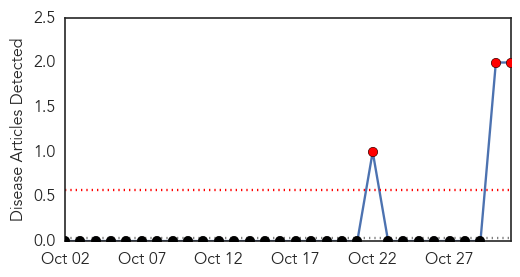
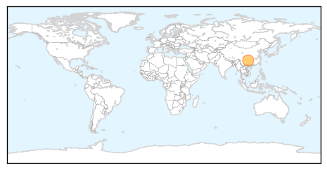
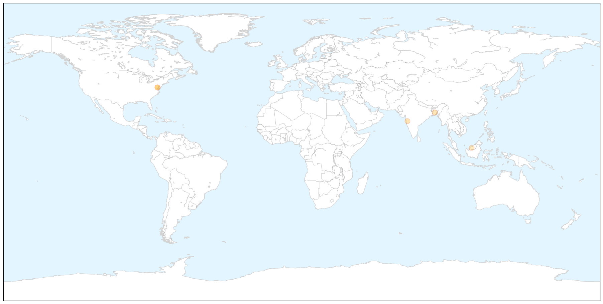

Bubonic Plague
30-Day Web Trend
3 alerts, 0 warnings

30-Day Twitter Trend
0 alerts, 0 warnings

Article Locations

Article Confidences

Top Articles:
Top Tweets:
-
No tweets found for Oct 31, 2014
Meningitis
30-Day Web Trend
2 alerts, 4 warnings

30-Day Twitter Trend
0 alerts, 0 warnings

Article Locations

X

Article Confidences

Top Articles:
Top Tweets:
-
No tweets found for Oct 31, 2014